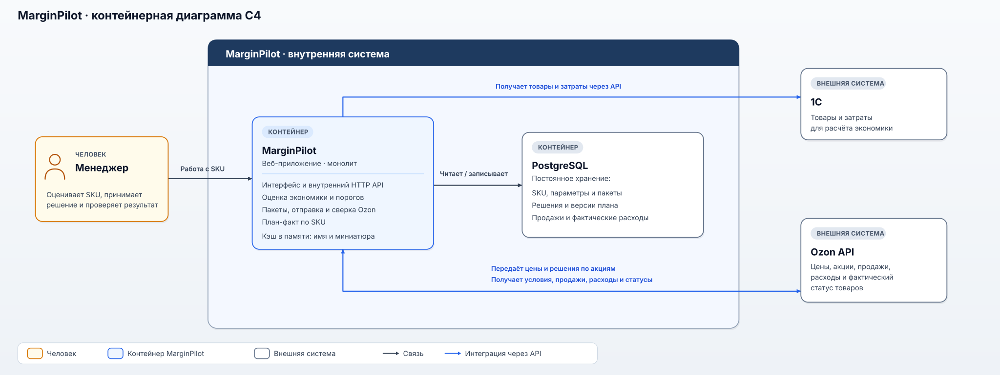

Диаграмма C4 показывает границы MarginPilot, его базу данных и внешние системы. Внутреннее устройство монолита и инфраструктура развёртывания здесь не реконструируются.

Открыть схему в полном размере

Менеджер работает в веб-интерфейсе монолита. MarginPilot рассчитывает экономику, отправляет решения в Ozon, сверяет результат и строит план-факт. Интерфейс и внутренний HTTP API не показаны как отдельные сервисы. Кэш названий и миниатюр на схеме — проектное дополнение; его наличие в исходной реализации не подтверждено.
PostgreSQL хранит данные, нужные между запросами: товары, параметры и снимки расчёта, пакеты и решения менеджеров, версии плана, продажи и фактические расходы. Структура хранения приведена в проектной модели БД.
1С предоставляет сведения о товарах и затратах. Через Ozon API MarginPilot получает условия продажи и акций, продажи, рекламные расходы и фактические цены или статусы участия; туда же отправляет изменения цен и действия с акциями. Ответ на отправку не заменяет последующего чтения фактического состояния. Порядок обработки описан в backend-логике, а внутренние запросы интерфейса — в HTTP-контракте.